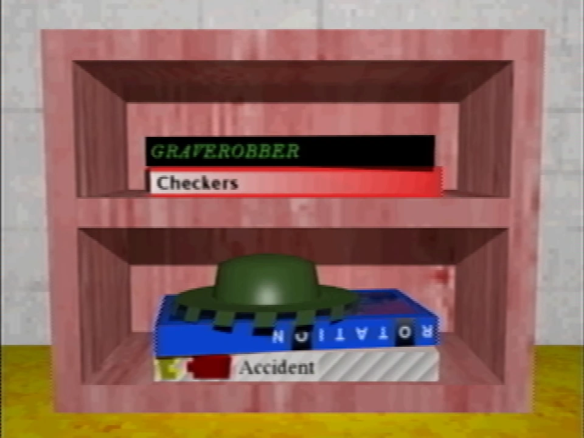
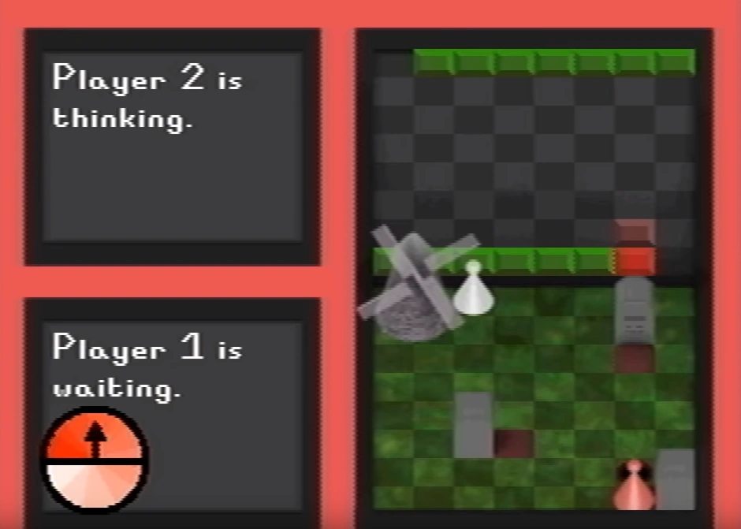

The board games are interactive prompted games on a shelf in the room beyond the girl image on the second floor of the school. They are introduced in Petscop 22, when the player converses with a counselor.

A game of Graverobber in progress.
Graverobber is the first game on the top, and is the only one played. Its box is black, with a green monospaced font reading "GRAVEROBBER" on the side.
The exact rules of Graverobber are unknown, as its explanation was cut short. It is mentioned to be "kind of like Battleship."
Player 1 places a windmill somewhere on the play area. That player then places three graves and rotates them accordingly. Player 1 then selects Record from the bottom left menu and places two tiles at the location of both players on the upper board. Player 1 can also change a tile to red by pressing the same tile again, and Player 1 then moves its piece (marked in red) either horizontally or vertically. Player 1 then selects Continue from the bottom left menu.
Player 2 then moves its piece and continues.
Player 1 selects record and places tiles on roughly every spot that any pawn passed over on the upper board. Player 1 can dig on a tile around their pawn, which then creates a brown tile in the same spot on the upper board, and creates a hole in the same spot on the bottom board.
Digging at a spot around a grave will sometimes lift up a darkened cardboard box of unknown contents.
Checkers is the second game from the top. Its box is red, with a white gradient and the game's title in a black font on the side. It's presumably the real-world game Checkers.
Rotation is the first game from the bottom. Its box is blue, with a pink-blue image on the front, and the title in a spaced out font on the side, with both O's having a black highlight.
Accident is the second game from the bottom. Its box is white, with a grey-white gradient stripe pattern and its title in a Times New Roman font, and two blocks previously seen in a small hallway in the Newmaker Plane.
{kind=link}
{kind=link}
{kind=link}
{kind=link}